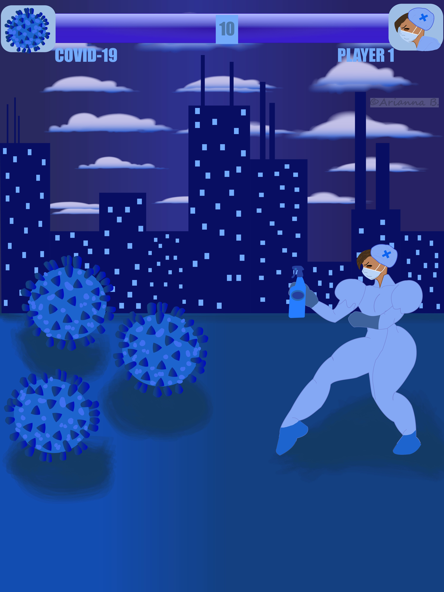

My avatar icon is a self-portrait depicted in a cartoon style. It is a passion project and was created in both Adobe Illustrator and Clip Studio Paint.
About this art

My "Masquerade Ball" poster was a final project for my 'Basic Software For Design' class. Here, I combined Adobe Illustrator and Clip Studio Paint to create the gradients, text, and starry effects.


The blue poster was an assignment for my Design Foundations class. The goal was to create a poster that depicts my feelings about the year 2019 and how I found comfort during those difficult times
The illustration was a final project for my Illustration 1 class in which students were required to read an article about remote working. Then, students were instructed to create an illustration that should depict remote working by using certain objects or symbols and uses design principles. My final illustration was colored by using the Adobe Photoshop app.

The two images of Vincent van Gogh was an assignment for by Basic Software for Design class. The professor instructed students to re-create a famous classical painting into an illustration that depicts their own creative perspective of that art piece. Using Adobe Illustrator, I remade Vincent van Gogh's famous self portrait into a modern version of himself. I used imagetracing, patterns, the symbol tool, the pen tool, and the brush tool to create this compostion.